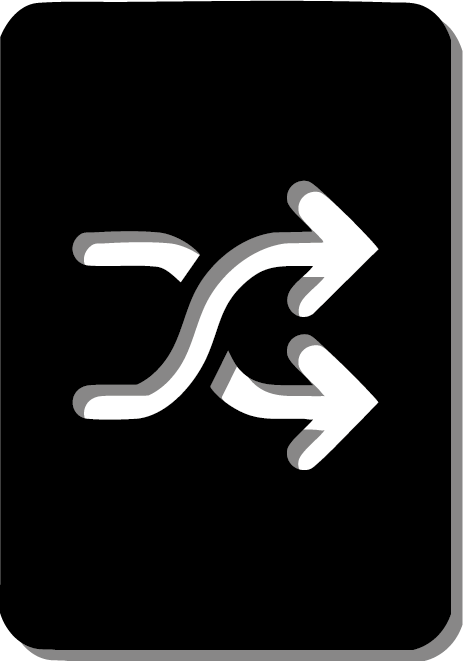

 Scrambled Cards
Home
Move list
Our discord
About us
Favorites
Filter by Difficulty:
All
Beginner
Intermediate
Advanced
Filter
One handed
Two handed
Aerial
Get new moves
Some videos are shown as unavailable but you can open them on youtube where they are supposed to work
What's New (June 13, 2025)
Added favorites system (star to add/remove, cross to remove in favorites)
Favorites now sync across all pages and are visually indicated
Filter by difficulty added to main page
Layout improvements: stable move/video/button positions
Navbar and footer are now consistent on all pages
"Clear Favorites" button added
Bug fixes and more!
Enjoy the updates!